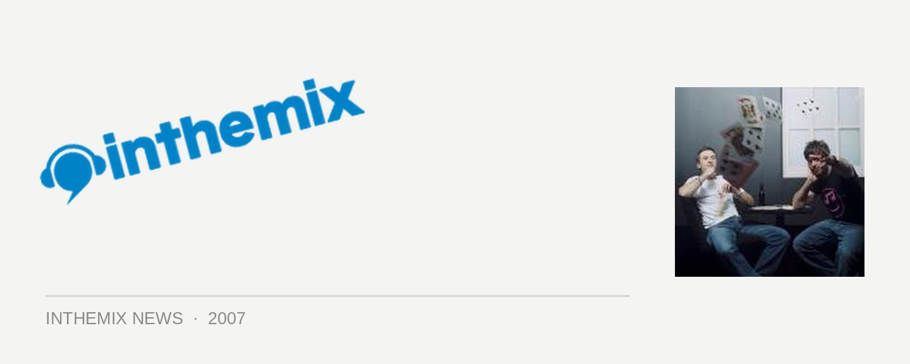

Plump DJs take it to the street for Sydney Festival!
That’s right, the Plump DJs along with Spank Rock, Chromeo and a host of other acts will be taking over the city, part of a massive party to launch the Sydney Festival festivities this coming January. Festival First Night will be taking place on Saturday the 5th and it’ll be a sprawling, completely free event that will see Brian Wilson playing at The Domain, jazz and salsa in Hyde Park and live performances in hotels, bars and restaurants all over the city. But dance fans will be in for an extra special treat when Fuzzy take it to the streets in Martin Place.
The organisers of Sydney Festival are promising an outstanding line-up of international and local artists, and while you’ll get other chances to see Spank Rock and Chromeo play during the month, it’ll be the Plump DJs’ only Sydney gig while they’re in the country so it should make for a street party of massive proportions.
Excited? Check HERE for the skinny and stay tuned to ITM for more details. And if you’re as pumped as I am, take a look at this clip of the Plumps performing at Field Day earlier this year…